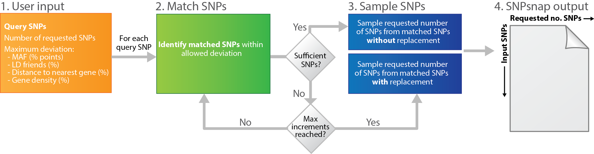

SNPsnap
Methodology
Aim
The SNPsnap webserver enables SNP-based enrichment analysis by providing matched sets of SNPs that can be used to calibrate background expectations. Specifically, SNPsnap efficiently identifies sets of randomly drawn SNPs that are matched to a set of query SNPs based on- minor allele frequency
- number of SNPs in linkage disequilibrium (LD buddies)
- distance to nearest gene
- gene density.
Genetic properties used to sample random but matched SNPs
- Minor allele frequency: SNPs are partitioned into minor allele frequency bins of 1-2, 2-3, ..., 49-50% strata.
- LD buddies: the number of “buddy” (or "proxy") SNPs in LD at various thresholds. SNPsnap currently offer LD buddy counts for thresholds using r² > 0.1, 0.2, ..., 0.9 9.
- Distance to nearest gene: the distance to the nearest 5’ start site using Ensembl gene coordinates (Flicek et al., 2014). If the SNP is within a gene, the distance to that gene’s start site is used.
- Gene density: the number of genes in loci around the SNP, using LD (r² > 0.1, 0.2, ..., 0.9) and physical distance (100, 200, ..., 1000 kb) to define loci.
Algorithm

Webserver
User input
Chromosomal positions of SNPs (not rsIDs), e.g. 3:20145787 for a SNP on chromosome 3 at bp 20,145,787.Use genome build GRCh37/hg19 coordinates.
SNPsnap score
SNPsnap reports two scores that serve as guidelines for selecting proper matching settings.- Insufficient-matches: the number of SNPs for which SNPsnap is not able to identify the required number of matched SNPs
- Match-size: median number of SNPs matched for the subset of SNPs with insufficient matches
Output files
- matched_snps.tab: matrix with input SNPs as rows and matched SNPs as columns
- input_snps_excluded.tab: first column is input SNP; second column is reason for exclusion, e.g. SNP does not exist in the SNPsnap SNP data base or SNP maps to HLA region (if the setting is enabled)
- input_snps_annotated.tab: annotation of input SNPs (see SNP Annotations for details)
- matched_snps_annotated.tab: annotation of matched SNPs (see SNP Annotations for details)
- snpsnap_summary.txt: a summery of the input parameters to SNPsnap and the SNPsnap scores
SNP Annotations
SNPsnap currently supports the following annotations of SNPs:- set
- input_snp
- snpID
- rsID
- freq_bin
- gene_count
- dist_nearest_gene_snpsnap
- dist_nearest_gene
- dist_nearest_gene_located_within
- loci_upstream
- loci_downstream
- ID_nearest_gene_snpsnap
- ID_nearest_gene
- ID_nearest_gene_located_within
- ID_genes_in_matched_locus
- friends_ld01
- friends_ld02
- friends_ld03
- friends_ld04
- friends_ld05
- friends_ld06
- friends_ld07
- friends_ld08
- friends_ld09
© Broad 2014